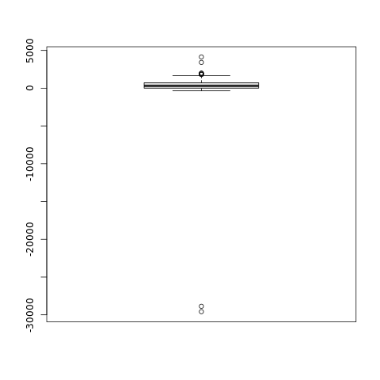

Hard drive occupation prediction with R - part 2
On the first article, we saw a quick-and-dirty method to predict disk space exhaustion when the usage pattern is rigorously linear. We did that by importing our data into R and making a linear regression.
In this article we will see the problems with that method, and deploy a more robust solution. Besides robustness, we will also see how we can generate a probability distribution for the date of disk space exhaustion instead of calculating a single day.
The problem with the linear regression
The linear regression used in the first article has a serious lack of robustness. That means that it is very sensitive to even single departures from the linear pattern. For instance, if we periodically delete some big files in the hard disk, we end up breaking the sample in parts that cannot be analysed together. If we plot the line given by the linear model, we can see clearly that it does not fit our overall data very well:
We can see in the graph that the linear model gives us a line that our free disk space is increasing instead of decreasing! If we use this model, we will reach the conclusion that we will never reach df0.
If we keep analysing used disk space, there is not much we can do besides discarding the data gathered before the last cleanup. There is no way to easily ignore only the cleanup.
In fact, we can only use the linear regression method when our disk consumption pattern is linear for the analysed period - and that rarely is the case when there is human intervention. We should always look at the graph to see if the model makes sense.
A naïve new method: averaging the difference
Instead of using the daily used disk space as input, we will use the daily difference (or delta) of used disk space. By itself, this reduces a big disk cleanup to a single outlier instead of breaking our sample. We could then just filter out the outliers, calculate the average daily increment in used disk space and divide the current free space by it. That would give us the average number of days left until disk exhaustion. Well, that would also give us some new problems to solve.
The first problem is that filtering out the outliers is neither straightforward nor recommended. Afterall, we are throwing out data that might be meaningful: it could be a regular monthly process that we should take into account to generate a better prediction.
Besides, by averaging disk consumption and dividing free disk space by it, we would still not have the probability distribution for the date, only a single value.
The real new method: days left by Monte Carlo simulation
Instead of calculating the number of days left from the data, we will use a technique called Monte Carlo simulation to generate the distribution of days left. The idea is simple: we sample the data we have - daily used disk space - until the sum is above the free disk space; the number of samples taken is the number of days left. By doing that repeatedly, we get the set of "possible days left" with a distribution that corresponds to the data we have collected. Let's how we can do that in R.
First, let's load the data file that we will use (same one used in the introduction) along with a variable that holds the size of the disk (500GB; all units are in MB):
duinfo <- read.table('duinfospike.dat',
colClasses=c("Date","numeric"),
col.names=c("day","usd"))
attach(duinfo)
totalspace <- 500000
today <- tail(day, 1)
We now get the delta of the disk usage. Let's take a look at it:
dudelta <- diff(usd)
plot(dudelta, xaxt='n', xlab='')
The summary function gives us the five-number summary, while the boxplot shows us how the data is distributed graphically:
summary(dudelta)
Min. 1st Qu. Median Mean 3rd Qu. Max.
-29583.00 5.25 301.00 123.37 713.00 4136.00
boxplot(dudelta)

The kernel density plot gives us about the same, but in another visual format:
plot(density(dudelta))
We can see the cleanups right there, as the lower points.
The next step is the creation of the sample of the number of days left until exhaustion. In order to do that, we create an R function that sums values taken randomly from our delta sample until our free space zeroes, and returns the number of samples taken:
f <- function(spaceleft) {
days <- 0
while(spaceleft > 0) {
days <- days + 1
spaceleft <- spaceleft - sample(dudelta, 1, replace=TRUE)
}
days
}
By repeatedly running this function and gathering the results, we generate a set of number-of-days-until-exhaustion that is robust and corresponds to the data we have observed. This robustness means that we don't even need to remove outliers, as they will not disproportionally bias out results:
freespace <- totalspace - tail(usd, 1) daysleft <- replicate(5000, f(freespace))
plot(daysleft)

What we want now is the empirical cumulative distribution. This function gives us the probability that we will reach df0 before the given date.
df0day <- sort(daysleft + today) df0ecdfunc <- ecdf(df0day) df0prob <- df0ecdfunc(df0day)
plot(df0day, df0prob, xaxt='n', type='l') axis.Date(1, df0day, at=seq(min(df0day), max(df0day), 'year'), format='%F')
With the cumulative probability estimate, we can see when we have to start worrying about the disk by looking at the first day that the probability of df0 is above 0:
df0day[1] [1] "2010-06-13" df0ecdfunc(df0day[1]) [1] 2e-04
Well, we can also be a bit more bold and wait until the chances of reaching df0 rise above 5%:
df0day[which(df0prob > 0.05)[1]] [1] "2010-08-16"
Mix and match and see what a good convention for your case is.
Conclusion
This and the previous article showed how to use statistics in R to predict when free hard-disk space will zero.
The first article was main purpose was to serve as an introduction to R. There are many reasons that make linear regression an unsuitable technique for df0 prediction - the underlying process of disk consumption is certainly not linear. But, if the graph shows you that the line fits, there is no reason to ignore it.
Monte Carlo simulation, on the other hand, is a powerful and general technique. It assumes little about the data (non-parameterized), and it can give you probability distributions. If you want to forecast something, you can always start recording data and use Monte Carlo in some way to make predictions based on the evidence. Personally, I think we don't do this nearly as often as we could. Well, Joel is even using it to make schedules.
Further reading
- http://www.joelonsoftware.com/items/2007/10/26.html: Joel's use of Monte Carlo to make schedules.
- https://en.wikipedia.org/wiki/Bootstrapping_%28statistics%29: Wikipedia's page on bootstrapping, which is clearer than the one on Monte Carlo simulations.
- http://www.r-bloggers.com/: daily news and tutorials about R, very good to learn the language and see what people are doing with it.